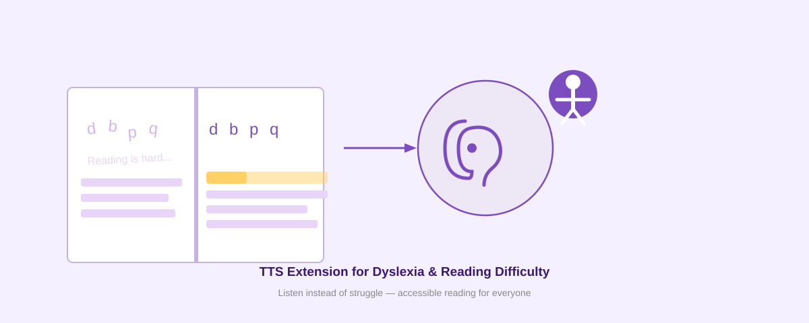

The Best Free Read Aloud Extension for Dyslexia and Reading Difficulties

Reading difficulties and dyslexia affect millions of people worldwide. If you struggle with reading comprehension, focus, or processing written text, a text-to-speech (TTS) extension can be a game-changer. Voice Reader is a free Chrome extension designed specifically to support people with dyslexia and reading challenges by converting any text on the web into clear, natural-sounding speech.
Why Text-to-Speech Helps With Dyslexia
Dyslexia is a neurological learning difference that affects how the brain processes written language. Reading can be slower, more effortful, and more prone to errors. When you combine visual text with audio speech, your brain gets dual input—a powerful technique called multimodal learning.
Research shows that listening while reading:
- Improves comprehension and retention
- Reduces cognitive load and fatigue
- Builds confidence and independence
- Allows focus on meaning instead of decoding
- Makes learning more accessible for all learning styles
Voice Reader for Accessibility
Voice Reader is built from the ground up as an accessibility tool. Unlike generic TTS services, it's designed for offline neural text-to-speech without requiring an account or subscription.
Key Features for Dyslexic Readers
- Works offline: No internet required after the first setup. Your privacy is protected—no data is sent to any server.
- Word highlighting and focus mode: Follow along as each word is highlighted in real-time, helping keep your place on the page.
- Natural neural voices: Powered by Piper VITS, Voice Reader uses advanced AI models to generate speech that sounds human and engaging—not robotic.
- Adjustable speed and tone: Control playback speed, choose between clear explanatory voice or storytelling mode, and customize pitch to suit your preferences.
- Works on any website: Right-click any text and choose "Read (Explanatory)" or "Read (Storytelling)" to hear it aloud.
- Floating control bar: Play, pause, and adjust speed on the fly without interrupting your reading flow.
How to Get Started
Installing Voice Reader takes less than 2 minutes. Follow these steps:
- Open
chrome://extensions/in your Chrome browser - Turn on Developer mode (toggle in the top-right corner)
- Click Load unpacked
- Select the Voice Reader folder
- The extension appears in your toolbar—you're ready to go
For detailed visual instructions, see How to Install an Unpacked Chrome Extension in Developer Mode.
Works With Any Chrome-Based Browser
Voice Reader runs on Chrome, Microsoft Edge, Brave, Opera, and any other Chromium-based browser. Install once, and your settings sync across all your devices.
Privacy and Accessibility First
Voice Reader is a privacy-focused TTS extension that sends zero data to the cloud. All processing happens locally on your device. You control the data—there are no tracking pixels, no analytics, and no mandatory login.
Better Than Subscription Services
Speechify and similar services charge $12–$150 per month. Voice Reader is completely free. You get the same or better features—offline neural TTS, word highlighting, customizable voices—without paying or creating an account.
FAQ
Does Voice Reader work offline?
Yes. After downloading the voice model once (happens automatically on first use), the extension works completely offline. No internet required.
Can I use it on my phone?
Voice Reader is a Chrome extension and works on Chrome for Android. For iPhone and iPad, try Safari's built-in "Speak Selection" feature or search for accessible TTS apps on the App Store.
How good is the voice quality?
Voice Reader uses Piper neural TTS models, which produce natural, expressive speech. Quality depends on the model you choose (fast, medium, or high quality). Even the smallest model sounds far better than older synthetic voices.
Can I customize the voice?
Yes. Open Voice Reader options to choose between different voices (English and other languages), adjust pitch and speed, and switch between Explanatory and Storytelling modes. Settings are saved and sync across devices.
Is it free?
100% free. No subscription, no account, no ads. Install and use forever.
Install Voice Reader Free Today
If you or someone you care about struggles with reading, dyslexia, ADHD, or other learning differences, Voice Reader can help. Give it a try—it's free, private, and takes 2 minutes to install.
Install Free